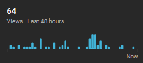

#
I think I promised to write an update about my grandma. My blog doesn't have Google Analytics so I don't know if somebody is reading it and it's personal stuff but I'll pretend that somebody does.
So, I think that my grandma is gone. She had 4 more "episodes". Every time she calls me telling that somebody robbed her. When I go and visit her, the money is hidden somewhere, she swears that the robbers put the money back so I would think that she is insane. I know... it's fucked, and quite sad but I am doing ok. I never interacted with a person with dementia or alzheimers before so this is new to me. Would be cool if dad was more responsible and took care of his mother more, especially when this is happening.
Yesterday, she called at 5AM and told me that she got drugged, raped while sleeping from the drugs and when she woke up she was barricaded in the bathroom while the robbers took the money. When I went to see her the money was again just hidden. I am trying to be supportive of her but at the same time I don't know what the hell am I doing. It feels like I am smiling and telling a soon to be dead person that she is going to be okay.
While it's sad, it doesn't surprise me that this is happening. It's new to me but she is old. In a way I expected that she might start losing her mind. What I didn't expect was that it will happen while she is still physically capable. She still goes to her garden almost every day to take care of her plants. If she harms herself somehow and won't be able to take care of the plants I think that will kill her.
Don't really want to be old, or at least lose my mind. Also, I almost never feel alone but now... Kind of wish I had friends to speak with as the best thing I have is this blog of 2 posts right now. Reminds me of Emil Cioran's excuse to write. Anyway.
I don't feel much like writing but. I learned some React. I also worked on CPUVG. I can scratch these off.
So even though I wasn't planning on doing these now, I completed them. I redirected my old blogs to here. Maybe someone will wander in. I also slowly started uploading some videos. I will be posting 48hr viewership stats of every of my Youtube channel every Monday. I also started learning Russian language some time ago on Duolingo. Skill tree progress every Monday as well. I'll make an exception and post all of this today. Anyway. I don't really feel much like writing, what I wanted to get off my chest, I did. Times are tough but when are they aren't? Just light up a cigarette and push through all the shit until you get to the sun. Better to do something than feel sorry for yourself.
CPUVG
